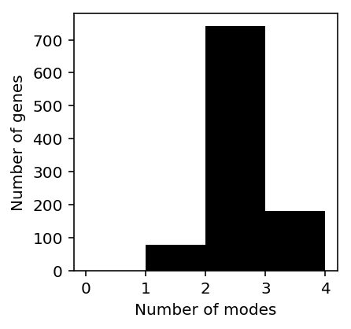
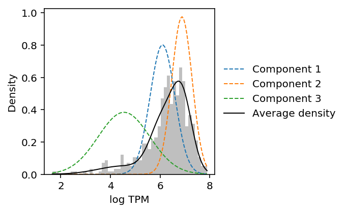
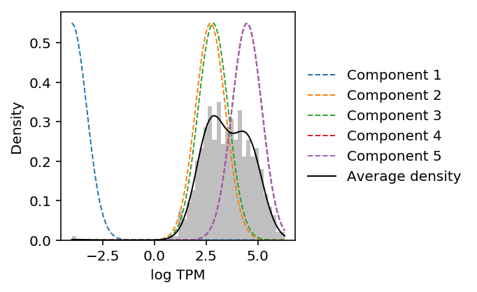
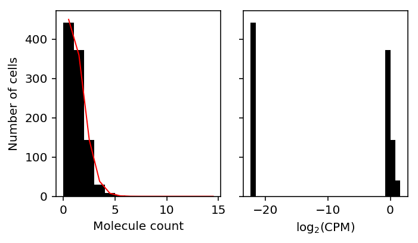
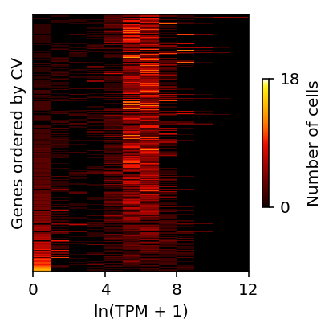
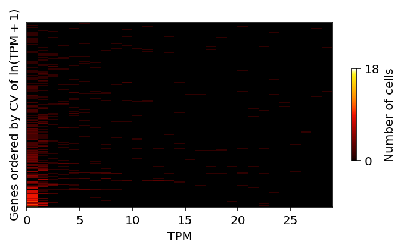

Estimating the number of modes
Table of Contents
Introduction
Here, we investigate whether the distribution of gene expression across cells is multi-modal.
Setup
import gzip import numpy as np import pandas as pd import scipy.stats as st import rpy2.robjects.packages import rpy2.robjects.pandas2ri import rpy2.robjects.numpy2ri rpy2.robjects.pandas2ri.activate() rpy2.robjects.numpy2ri.activate() mclust = rpy2.robjects.packages.importr('mclust') ashr = rpy2.robjects.packages.importr('ashr') mixsqp = rpy2.robjects.packages.importr('mixsqp')
%matplotlib inline %config InlineBackend.figure_formats = set(['retina'])
import colorcet import matplotlib.pyplot as plt plt.rcParams['figure.facecolor'] = 'w'
Results
Distribution of log CPM across cells
Reproduce Fig 1C from Bacher and Kendziorski 2016.
{kind=link}
Data set sc2 is scRNA-Seq of hESCs generated in Leng et al 2015.
curl -s -o GSE64016_H1andFUCCI_normalized_EC.csv.gz "https://www.ncbi.nlm.nih.gov/geo/download/?acc=GSE64016&format=file&file=GSE64016_H1andFUCCI_normalized_EC.csv.gz"
leng_tpm = pd.read_table('/scratch/midway2/aksarkar/modes/GSE64016_H1andFUCCI_normalized_EC.csv.gz', sep=',', index_col=0)
To estimate the number of modes, Bacher and Kendziorski fit a Gaussian mixture model to log-transformed expression, selecting the number of components which optimizes BIC.
def naive_est_num_modes(x): x = np.log(x.mask(x == 0).dropna()).values.reshape(-1, 1) if x.shape[0] > 1: res = mclust.Mclust(x, verbose=False) return np.array(res.rx2('parameters').rx2('mean')).shape[0] else: return np.nan
num_modes = (leng_tpm .loc[(leng_tpm > 0).mean(axis=1) > 0.75] .sample(n=1000, random_state=0) .apply(naive_est_num_modes, axis=1))
plt.clf() plt.gcf().set_size_inches(3, 3) plt.hist(num_modes, bins=np.arange(num_modes.dropna().max()), color='black') plt.xlabel('Number of modes') _ = plt.ylabel('Number of genes')

Look at some examples.
def plot_data_gmm(x): x = np.log(x.mask(x == 0).dropna()).values.reshape(-1, 1) res = mclust.Mclust(x, verbose=False) plt.clf() plt.gcf().set_size_inches(3, 3) grid = np.linspace(x.min(), x.max(), 100) plt.hist(x, color='.75', bins=50, density=True) means = np.array(res.rx2('parameters').rx2('mean')).reshape(-1, 1) variances = np.array(res.rx2('parameters').rx2('variance').rx2('sigmasq')).reshape(-1, 1) F = st.norm(loc=means, scale=np.sqrt(variances)).pdf(grid) for i, px in enumerate(F): plt.plot(grid, px, lw=1, label='Component {}'.format(i + 1), ls='--') weights = np.array(res.rx2('parameters').rx2('pro')) plt.plot(grid, weights.dot(st.norm(loc=means, scale=np.sqrt(variances)).pdf(grid)), label='Average density', lw=1, c='k') plt.legend(frameon=False, loc='center left', bbox_to_anchor=(1, .5)) plt.xlabel('log TPM') _ = plt.ylabel('Density')
CDC6 was reported as a gene showing cyclical gene expression through the cell cycle in the original study.
plot_data_gmm(leng_tpm.loc['CDC6'])

Look at the gene with the most estimated modes.
num_modes.idxmax()
'SEPN1'
plot_data_gmm(leng_tpm.loc['SEPN1'])

The results suggest that Gaussian mixture modeling of log-transformed data does not give the right answer. Further, they suggest that GMM overfits the data (despite optimizing BIC).
Pseudocount
When computing log-transformed expression values, we need to introduce a pseudocount \(\epsilon\) to deal with observations of zero.
Standard choices include \(\epsilon = 1\) and \(\epsilon = .5 / \bar{R}\), where \(\bar{R} = \frac{1}{n} \sum_i R_i\) (McCarthy et al 2012).
Clearly, the pseudocount will introduce a mode at zero, even when the data is Poisson distributed.
x = simulate_counts(num_cells=1000, num_genes=10000, size=1e5, seed=3) R = x.sum(axis=1) # Match edgeR eps = .5 / R.mean() y = (np.log(x + eps) - np.log(R.reshape(-1, 1) + 2 * eps) + 6 * np.log(10)) / np.log(2) # Get the simulated gene with most zeros idx = np.argmax((x == 0).mean(axis=0))
plt.clf() fig, ax = plt.subplots(1, 2, sharey=True) fig.set_size_inches(5, 3) ax[0].hist(x[:,2], bins=np.arange(15), color='k') ax[0].plot(.5 + np.arange(15), 1000 * st.poisson(mu=x[:,2].mean()).pmf(np.arange(15)), lw=1, c='r') ax[0].set_xlabel('Molecule count') ax[0].set_ylabel('Number of cells') ax[1].hist(y[:,2], bins=30, color='k') ax[1].set_xlabel('$\log_2(\mathrm{CPM})$') fig.tight_layout()

Shalek et al. 2013
Shalek et al. 2013 generated scRNA-seq of 18 mouse bone-marrow–derived dendritic cells activated by lipopolysaccharide.
In their analysis of heterogeneity, they conclude that the expression of many genes is bimodal. However, in order to make this conclusion, they inspect the distribution of log-transformed TPM.
https://www.nature.com/articles/nature12172/figures/2
Read the data.
shalek_tpm = pd.read_csv('/scratch/midway2/aksarkar/ideas/GSE41265_allGenesTPM.txt.gz', sep='\t').filter(like='S')
Shalek et al. transformed the TPM values as \(y = \ln(x + 1)\), then ordered genes by \(CV_y = S_y / \bar{y}\).
shalek_log_tpm = np.log(shalek_tpm + 1)
They called genes with \(\bar{x} > 250\) as highly expressed, and \(CV_y > 0.25\) as variable.
mu = shalek_tpm.mean(axis=1) cv = shalek_log_tpm.std(axis=1) / (shalek_log_tpm.mean(axis=1))
(mu > 250).sum()
522
np.logical_and(mu > 250, cv > 0.25).sum()
268
Reproduce Fig 2b.
bins = (shalek_log_tpm .loc[cv.sort_values(ascending=False).index] .loc[np.logical_and(mu > 250, cv > 0.25)] .apply(lambda x: pd.Series(np.histogram(x, bins=np.arange(13))[0]), axis=1) .reset_index(drop=True)) plt.clf() plt.gcf().set_size_inches(3, 3) plt.pcolormesh(bins, cmap=colorcet.cm['fire'], vmin=0, vmax=18) plt.xticks(np.arange(0, 13, 4), np.arange(0, 13, 4)) plt.yticks([]) cb = plt.colorbar(ticks=[0, 18], shrink=0.5) cb.set_label('Number of cells') plt.xlabel('ln(TPM + 1)') plt.ylabel('Genes ordered by CV') plt.tight_layout()

Do the same, but for the distribution of TPM instead of log-transformed TPM.
bins = (shalek_tpm .loc[cv.sort_values(ascending=False).index] .loc[np.logical_and(mu > 250, cv > 0.25)] .apply(lambda x: pd.Series(np.histogram(x, bins=np.arange(30))[0]), axis=1) .reset_index(drop=True)) plt.clf() plt.gcf().set_size_inches(5, 3) plt.pcolormesh(bins, cmap=colorcet.cm['fire'], vmin=0, vmax=18) plt.yticks([]) cb = plt.colorbar(ticks=[0, 18], shrink=0.5) cb.set_label('Number of cells') plt.xlabel('TPM') plt.ylabel('Genes ordered by CV of $\ln(\mathrm{TPM} + 1)$') plt.tight_layout()

Shalek et al. 2014
Shalek et al. 2014 performed scRNA-seq of > 1700 cells, and characterized bimodal gene expression, again analyzing log-transformed TPM.
Ideally, we should deconvolve gene expression under a unimodal assumption to see whether the true gene expression is bimodal or not. However, doing so from TPM is difficult.
In the simplest case (no multi-mapping reads) TPM is a maximum likelihood estimate of the relative abundances \(\alpha = (\alpha_1, \ldots, \alpha_p)\) in the model:
\[ x_1, \ldots, x_p | n \sim \mathrm{Multinomial}(n, \alpha) \]
where \(x_j\) is the number of reads mapping to gene (transcript) \(j\).
In practice, this model is transformed into an easier model:
\[ x_j \sim \mathrm{Poisson}(n \lambda_j) \]
for which the MLEs \(\hat\lambda_1, \ldots, \hat\lambda_p\) can be transformed into the MLE \(\hat\alpha\).
(In the case of multi-mapping reads, introduce latent variables \(z_{ij}\) denoting which transcript \(j\) read \(i\) maps to. Then, we can use EM to recove the MLE \(\hat\alpha\).)
Now, because TPM is already an estimate of the latent gene expression values of interest, in principle we could simply fit a unimodal distribution to them, assuming no noise.
Download the data.
curl -sO "ftp://ftp.ncbi.nlm.nih.gov/geo/series/GSE48nnn/GSE48968/suppl/GSE48968_allgenesTPM_GSM1189042_GSM1190902.txt.gz"
def _score_unimodal(train, test): res0 = ashr.ash_workhorse( train, # This is a hack: we really want the likelihood to be a point mass 1e-8, outputlevel='fitted_g', mixcompdist='+uniform', mixsd=pd.Series(np.geomspace(x.min() + 1e-8, x.max(), 25)), mode=pd.Series([x.min(), x.max()])) res = ashr.ash_workhorse( test, 1e-8, outputlevel='loglik', fix_g=True, g=res0.rx2('fitted_g')) return np.array(res.rx2('loglik')) def score_unimodal(x_train, x_test, pool, **kwargs): result = [] # np iterates over rows result = pool.starmap(_score_unimodal, zip(x_train.T, x_test.T)) return np.array(result).ravel() def _score_npmle(train, test, K=100): grid = np.linspace(0, train.max(), K + 1) res0 = ashr.ash_workhorse( train, 1e-8, outputlevel='fitted_g', g=ashr.unimix(pd.Series(np.ones(K) / K), pd.Series(grid[:-1]), pd.Series(grid[1:]))) res = ashr.ash_workhorse( test, 1e-8, outputlevel='loglik', fixg=True, g=res0.rx2('fitted_g')) return np.array(res.rx2('loglik')) def score_npmle(x_train, x_test, pool, **kwargs): result = [] # np iterates over rows result = pool.starmap(_score_npmle, zip(x_train.T, x_test.T)) return np.array(result).ravel()
<<imports>> import multiprocessing.pool as mp import os import sklearn.model_selection as skms <<deconvolve-tpm>> tasks = ['unimodal', 'npmle'] task = tasks[os.environ['SLURM_ARRAY_TASK_ID']] with mp.Pool() as pool: shalek_2014_tpm = pd.read_csv('/scratch/midway2/aksarkar/modes/shalek2014/GSE48968_allgenesTPM_GSM1189042_GSM1190902.txt.gz', sep='\t').T train, val = skms.train_test_split(x, test_size=0.1, seed=0) res = globals()[f'score_{task}'](train, val, pool=pool) res.to_csv(f'/scratch/midway2/aksarkar/modes/shalek2014/shalek2014-{task}.txt.gz', compression='gzip', sep='\t')
sbatch --partition=broadwl -a 0 -n1 -c28 --exclusive --mem=4G --time=12:00:00 --job-name=shalek --out=shalek.out #!/bin/bash source activate scmodes python <<EOF <<analyze-shalek-2014>> EOF